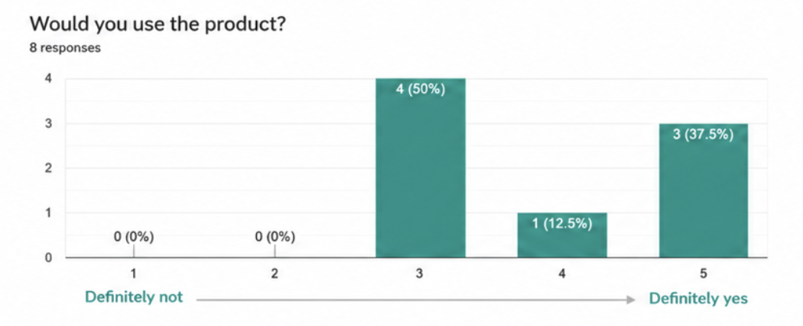
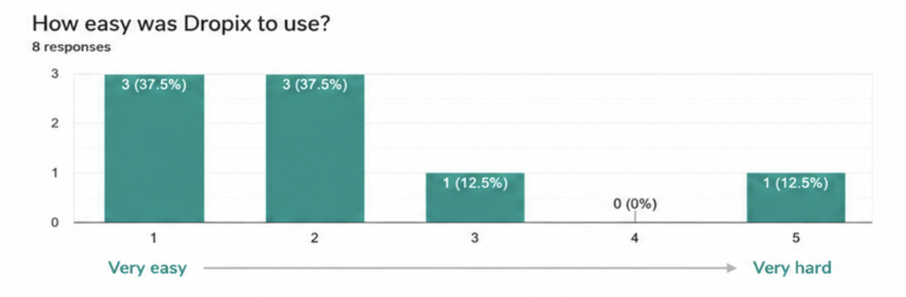
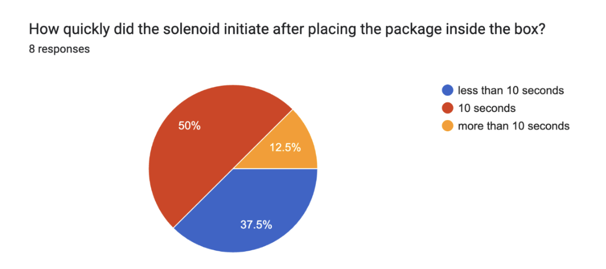
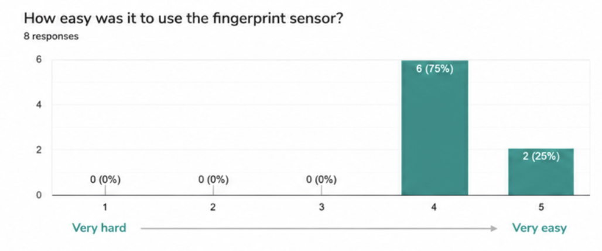
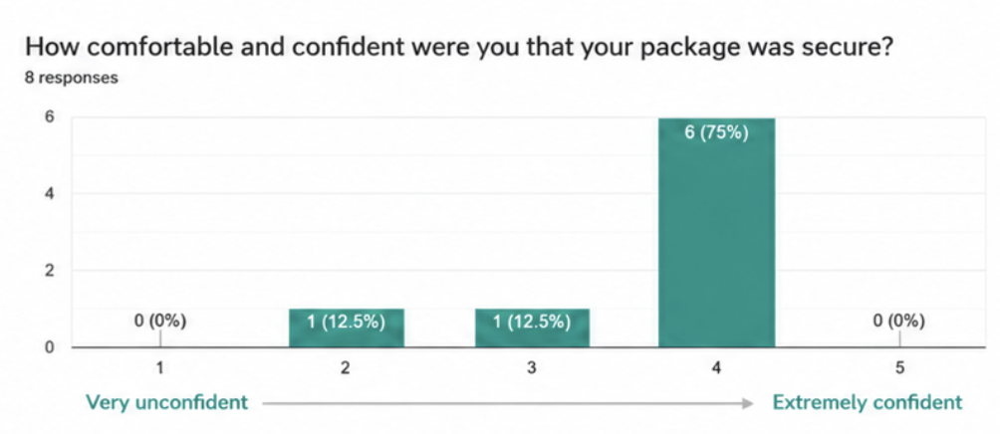
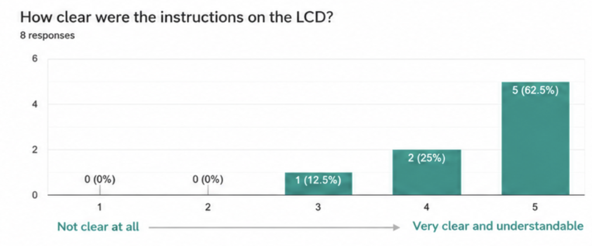

What resonated
Responses skewed positive on biometrics (fingerprint), the tactile certainty of the solenoid lock, and the LCD as a readable “copilot” during handoff—proof the core interaction model lands.
Use this page to see how we tested Dropix, what testers shared with us, and how that feedback redirected the prototype toward stronger usability and a more trustworthy enclosure.
Testers slid a package into the prototype, enrolled or used the fingerprint sensor, read on-screen directions on the LCD, and we recorded whether the solenoid lock engaged once the package was inside. The flow mirrored an actual drop-off—place, authorize, verify lock behavior.






Responses skewed positive on biometrics (fingerprint), the tactile certainty of the solenoid lock, and the LCD as a readable “copilot” during handoff—proof the core interaction model lands.
Repeated notes: wires too exposed, internals crowding the bay, capacity limited to one package, and tighter integration of parts inside the chassis for a safer, showroom-ready footprint.
Test feedback validated the concept—and mapped directly to concrete enclosure and workflow adjustments.
Exposed wiring and crowded components interfered with package placement.
Add internal walls to separate wiring from the package area.
The physical build needed cleaner fit, tolerances, and overall finish.
Refine the laser-cut body and component placement for a tighter assembly.
Volume is limited to a single package at a time.
Plan a larger box (or modular inserts) for multi-parcel use later on.
Next engineering priorities, distilled into focused upgrade targets.
Messaging targets homeowners, families, and lightly staffed storefronts receiving frequent shipments. Anchors stay threefold—security, ease, and peace of mind. Paid and social creatives can visualize porch pirates blocked at the moment of delivery, while owned channels (microsite plus live demo loops) dissect how fingerprint onboarding, occupancy sensing, instructional LCD states, and the solenoid interlock interoperate around a predictable package story arc.